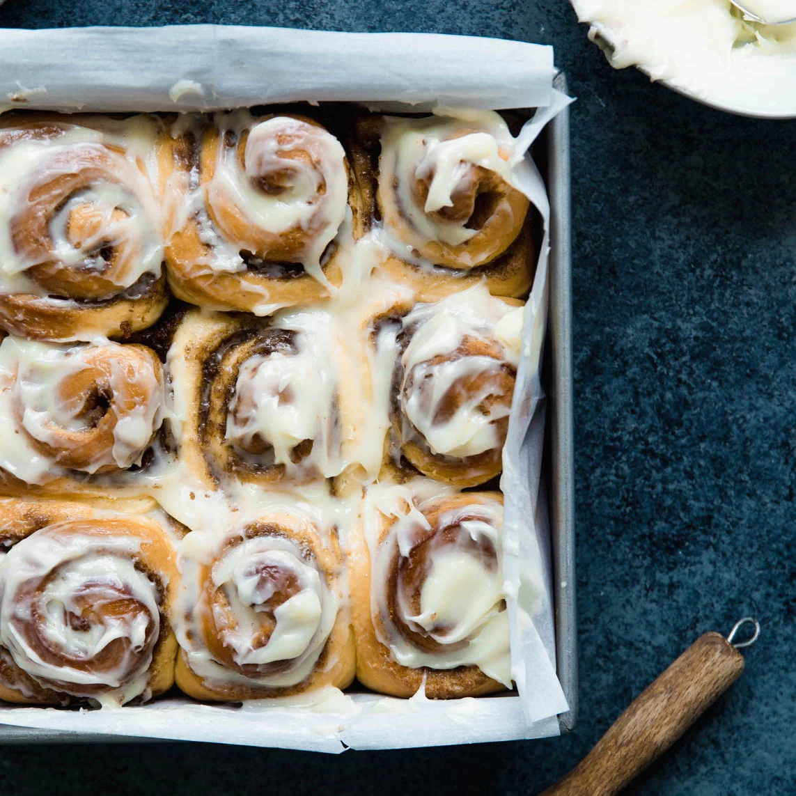

Cinnamon rolls

Description
Who doesn’t love cinnamon rolls?
Make these fluffy buns in just 45 minutes!
Ingredients
- Milk
- Sugar
- Flour
- Salt
- Egg
- Butter
- Cinnamon
- Brown Sugar
- Instant Yeast
Steps
- Mix the flour, sugar, salt and yeast. Stir the butter into the flour mixture and add the egg. Let it rest for a few minutes.
- Preheat the oven to 180 degrees C
- Roll the dough and sprinkle the cinnamon and brown sugar
- Bake the rolls for about 20 minutes until golden brown
- Enjoy!